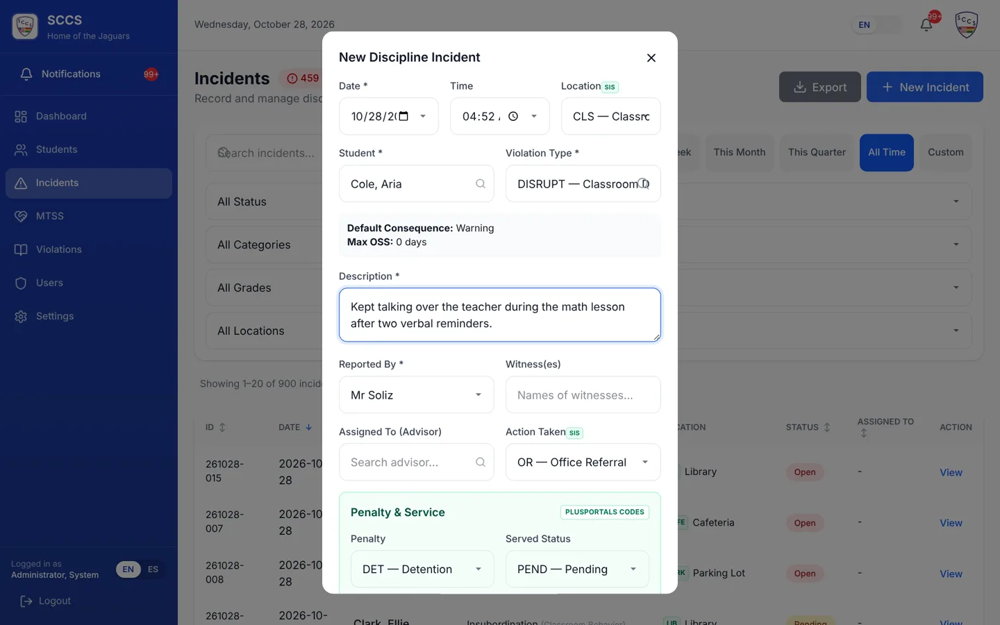
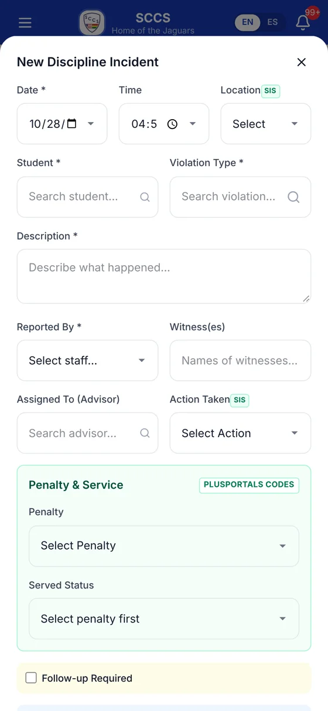

Step 1
Record an incident in a minute
When something happens in class, the teacher writes it down right away, from a laptop or a phone.
What you can do
- Find the student by name or ID number.
- Pick the infraction from 61 types; the suggested consequence and points appear instantly.
- Add the date, time, location, witnesses, description and action taken.
- Assign the advisor or counselor who will follow up.
Who:TeachersCounselorsPrincipalAdmin

